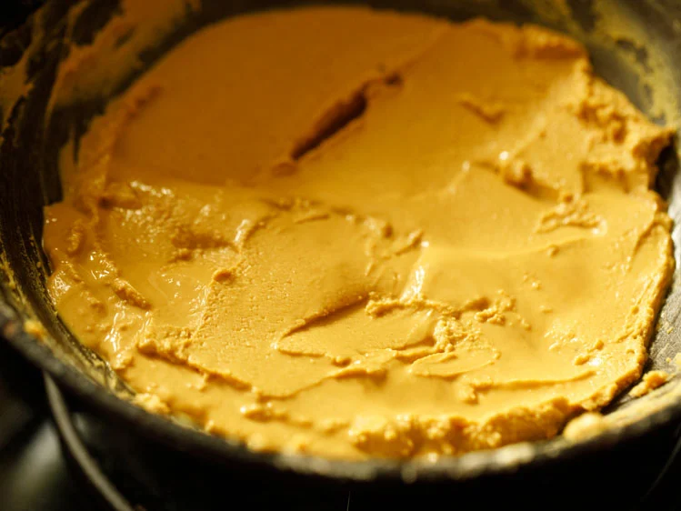

Besan ke Laddu Recipe (Easy Diwali Sweet)
Besan Ladoo is a popular Indian sweet made from gram flour a.k.a besan, powdered sugar and clarified butter (ghee). Also known as Besan ke Laddu these are round sweet balls made by roasting gram flour and ghee together, and then adding sugar to make a thick pasty dough – that is then formed into delicious, melt-in-your-mouth balls. Make this decadent sweet during festivals like Diwali or Ganesh Chaturthi with my easy fail-proof recipe.

How to make Besan Ladoo Recipe
Roast Besan
1. Take a heavy kadai or wok or pan and keep on a low heat. Add 2 cups besan (200 grams) in the kadai.
Use besan or gram flour which is within its shelf-period. Make sure it does not taste bitter or has become rancid.
2. Begin to dry roast besan on low to medium-low heat.
3. Stir often so that besan gets browned evenly and does not burn. When you begin to roast besan, you will see small lumps in the flour. These lumps disappear later.
4. Below you can see, the besan which has been roasting for 12 mins. You can see the color has changed as compared to what it was in the beginning.
Roast Ghee With Besan
5. Then add ½ cup ghee (125 grams). Preferably use the best quality and fragrant desi ghee – Homemade Ghee is always better.
6. Mix thoroughly.
7. Continue to stir often and cook this mixture of besan and ghee.
8. Keep on roasting for about a total of 12 to 15 minutes stirring non-stop. Depending on the thickness & size of pan, intensity of flame the timing of roasting will vary.
9. The mixture will thicken and the color will also change.
10. Soon you will see that the mixture will start releasing ghee and will give a nice fragrant aroma. Some ghee will float on top and and you will see a molten lava kind of consistency where the ghee is floating.
The mixture will also loose sides of the pan and become one. These are the signs that the besan is fully cooked.
If you add the sugar before the besan is cooked fully then your ladoo will have the taste of uncooked besan. So pay attention to these signs. Once you see these signs, you can move on to the next step.
Make Laddu Mixture
11. Remove the kadai or pan from the stove and keep on your kitchen countertop. Add 1 cup powdered sugar or castor sugar or boora (175 grams) and stir well so that no lumps are formed.
You will get the best taste in besan laddu with boora or powdered unrefined cane sugar which is easily available in Indian markets and many grocery stores. For this recipe I powdered ¾ cup sugar in a mixer.
12. After adding sugar mix really well. Begin to mix with all the strength from your hands. You have to mix this part vigorously so that the powdered sugar melts in the flour and ghee mixture.
13. Mix very well. The entire sugar has to be mixed evenly with the roasted besan and ghee mixture.
14. Add the 1 to 2 tablespoons raisins (chopped), 1 teaspoon green cardamom powder and 10 to 12 cashews which have been finely chopped.
You can use any nuts like almonds, pistachios, pecans, walnuts, pine nuts. Just finely chop them before adding.
15. Mix again very well and let the ladoo mixture become lukewarm or cool at room temperature.
Make Besan Laddu
16. Then shape into medium-sized ladoo with your palms. If you are not able to shape in balls then freeze the mixture for 5 minutes or refrigerate for 20 minutes.
Depending on the quality and consistency of ghee as well as the room temperature you may be able to easily shape these or not.
If the mixture looks very dry then add 2 to 3 tablespoon of hot melted ghee and mix again. Let the mixture cool again and then shape into laddu.
17. Store besan ladoo in an airtight steel container.
18. Serve Besan Ladoo. While serving you can garnish with some chopped nuts or cashews like I have done.